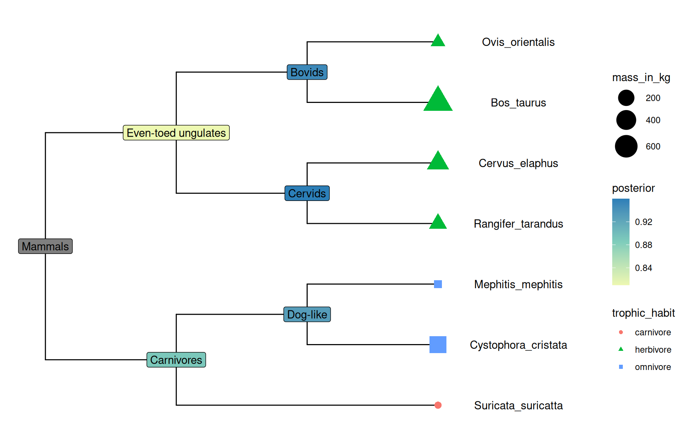
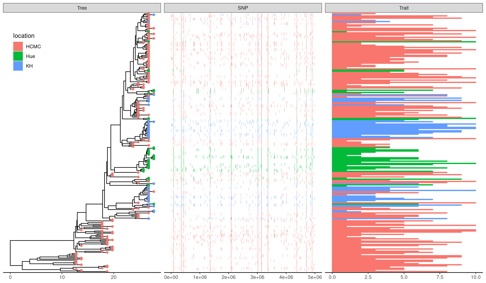
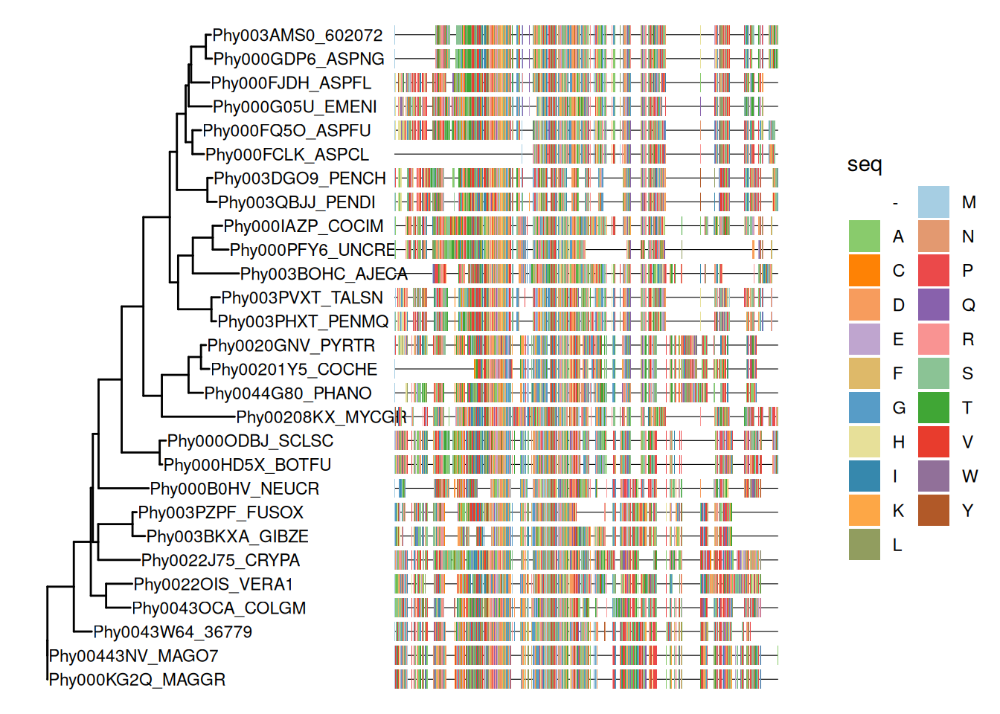
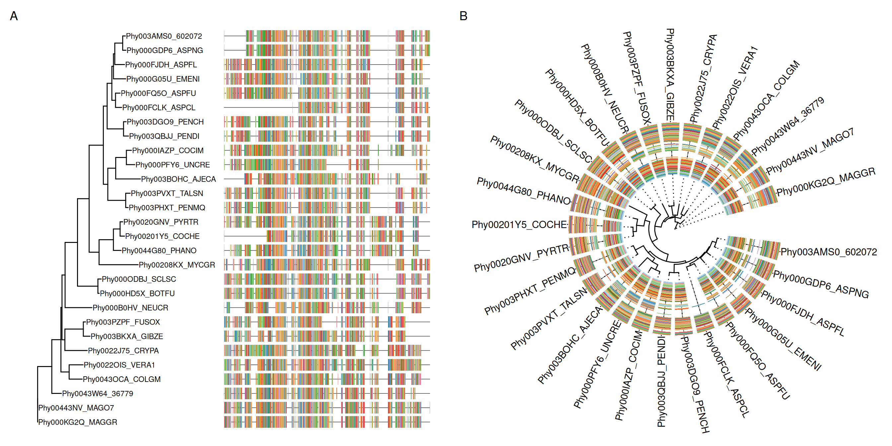

treeio v1.35.0 Learn more at https://yulab-smu.top/contribution-tree-data/
Please cite:
LG Wang, TTY Lam, S Xu, Z Dai, L Zhou, T Feng, P Guo, CW Dunn, BR
Jones, T Bradley, H Zhu, Y Guan, Y Jiang, G Yu. treeio: an R package
for phylogenetic tree input and output with richly annotated and
associated data. Molecular Biology and Evolution. 2020, 37(2):599-603.
doi: 10.1093/molbev/msz240
Integrating user data to annotate a phylogenetic tree can be done at different levels. The treeio package (Wang et al., 2020) implements full_join() methods to combine tree data to phylogenetic tree object. The tidytree package supports linking tree data to phylogeny using tidyverse verbs (see also Chapter 2). The ggtree package (Yu et al., 2018) supports mapping external data to phylogeny for visualization and annotation on the fly. Although the feature of linking external data is overlapping among these packages, they have different application scopes. For example, in addition to the treedata object, ggtree also supports several other tree objects (see Chapter 9), including phylo4d, phyloseq, and obkData that were designed to contain domain-specific data. The design of these objects did not consider supporting linking external data to the object (it can not be done at the tree object level). We can visualize trees from these objects using ggtree and link external data at the visualization level (Yu et al., 2018).
The ggtree package provides two general methods for mapping and visualizing associated external data on phylogenies. Method 1 allows external data to be mapped on the tree structure and used as visual characteristics in the tree and data visualization. Method 2 plots the data with the tree side-by-side using different geometric functions after reordering the data based on the tree structure. These two methods integrate data with phylogeny for further exploration and comparison in the evolutionary biology context. The ggtreeExtra provides a better implementation of the Method 2 proposed in ggtree (see also Chapter 10) and works with both rectangular and circular layouts (Xu et al., 2021).
6.1 Mapping Data to The tree Structure
In ggtree, we implemented an operator, %<+%, to attach annotation data to a ggtree graphic object. Any data that contains a column of “node” or the first column of taxa labels can be integrated using the %<+% operator. Multiple datasets can be attached progressively. When the data are attached, all the information stored in the data serves as numerical/categorical node attributes and can be directly used to visualize the tree by scaling the attributes as different colors or line sizes, labeling the tree using the original values of the attributes or parsing them as math expression, emoji or silhouette image. The following example uses the %<+% operator to integrate taxon (df_tip_data) and internal node (df_inode_data) information and map the data to different colors or shapes of symbolic points and labels (Figure ?fig-attacher). The tip data contains imageURL that links to online figures of the species, which can be parsed and used as tip labels in ggtree (see Chapter 8).
library(ggimage)library(ggtree)library(TDbook)# load `tree_boots`, `df_tip_data`, and `df_inode_data` from 'TDbook'p <-ggtree(tree_boots) %<+% df_tip_data +xlim(-.1, 4)p2 <- p +geom_tiplab(offset = .6, hjust = .5) +geom_tippoint(aes(shape = trophic_habit, color = trophic_habit, size = mass_in_kg)) +theme(legend.position ="right") +scale_size_continuous(range =c(3, 10))p2 %<+% df_inode_data +geom_label(aes(label = vernacularName.y, fill = posterior)) +scale_fill_gradientn(colors = RColorBrewer::brewer.pal(3, "YlGnBu"))

Example of attaching multiple datasets. External datasets including tip data (e.g., trophic habit and body weight) and node data (e.g., clade posterior and vernacular name) were attached to the ggtree graphic via the %<+% operator and the data was used to annotate the tree.
Although the data integrated by the %<+% operator in ggtree is for tree visualization, the data attached to the ggtree graphic object can be converted to treedata object that contains the tree and the attached data (see session 7.5).
6.2 Aligning Graph to the Tree Based on the Tree Structure
For associating phylogenetic tree with different types of plot produced by user’s data, ggtree provides geom_facet() layer and facet_plot() function which accept an input data.frame and a geom layer to draw the input data. The data will be displayed in an additional panel of the plot. The geom_facet() (or facet_plot) is a general solution for linking the graphic layer to a tree. The function internally re-orders the input data based on the tree structure and visualizes the data at the specific panel by the geometric layer. Users are free to visualize several panels to plot different types of data as demonstrated in Figure ?fig-phyloseq and to use different geometric layers to plot the same dataset (Figure ?fig-jv2017) or different datasets on the same panel.
The geom_facet() is designed to work with most of the geom layers defined in ggplot2 and other ggplot2-based packages. A list of the geometric layers that work seamlessly with geom_facet() and facet_plot() can be found in Table ?tbl-facet-geom. As the ggplot2 community keeps expanding and more geom layers will be implemented in either ggplot2 or other extensions, geom_facet() and facet_plot() will gain more power to present data in the future. Note that different geom layers can be combined to present data on the same panel and the combinations of different geom layers create the possibility to present more complex data with phylogeny (see also Figures ?fig-jv2017 and ?fig-gggenes). Users can progressively add multiple panels to present and compare different datasets in the evolutionary context (Figure ?fig-plottree). Detailed descriptions can be found in the supplemental file of (Yu et al., 2018).
library(ggtree)library(TDbook)## load `tree_nwk`, `df_info`, `df_alleles`, and `df_bar_data` from 'TDbook'tree <- tree_nwksnps <- df_allelessnps_strainCols <- snps[1,] snps<-snps[-1,] # drop strain namescolnames(snps) <- snps_strainColsgapChar <-"?"snp <-t(snps)lsnp <-apply(snp, 1, function(x) { x != snp[1,] & x != gapChar & snp[1,] != gapChar })lsnp <-as.data.frame(lsnp)lsnp$pos <-as.numeric(rownames(lsnp))lsnp <- tidyr::gather(lsnp, name, value, -pos)snp_data <- lsnp[lsnp$value, c("name", "pos")]## visualize the tree p <-ggtree(tree) ## attach the sampling information data set ## and add symbols colored by locationp <- p %<+% df_info +geom_tippoint(aes(color=location))## visualize SNP and Trait data using dot and bar charts,## and align them based on tree structurep +geom_facet(panel ="SNP", data = snp_data, geom = geom_point, mapping=aes(x = pos, color = location), shape ='|') +geom_facet(panel ="Trait", data = df_bar_data, geom = geom_col, aes(x = dummy_bar_value, color = location, fill = location), orientation ='y', width = .6) +theme_tree2(legend.position=c(.05, .85))

Example of plotting SNP and trait data. The ‘location’ information was attached to the tree and used to color tip symbols (Tree panel), and other datasets. SNP and Trait data were visualized as dot chart (SNP panel) and bar chart (Trait panel).
Companion functions to adjust panel widths and rename panel names are described in session 12.1. Removing the panel name is also possible and an example was presented in Figure ?fig-gggenes. We can also use aplot or patchwork to create composite plots as described in session 7.5.
The geom_facet() (or facet_plot()) internally used ggplot2::facet_grid() and only works with Cartesian coordinate system. To align the graph to the tree for the polar system (e.g., for circular or fan layouts), we developed another Bioconductor package, ggtreeExtra. The ggtreeExtra package provides the geom_fruit() layer that works similar to geom_facet() (details described in Chapter 10). The geom_fruit() is a better implementation of the Method 2 proposed in (Yu et al., 2018).
6.3 Visualize a Tree with an Associated Matrix
The gheatmap() function is designed to visualize the phylogenetic tree with a heatmap of an associated matrix (either numerical or categorical). The geom_facet() layer is a general solution for plotting data with the tree, including heatmap. The gheatmap() function is specifically designed for plotting heatmap with a tree and provides a shortcut for handling column labels and color palettes. Another difference is that geom_facet() only supports rectangular and slanted tree layouts, while gheatmap() supports rectangular, slanted, and circular (Figure ?fig-mgheatmap) layouts.
In the following example, we visualized a tree of H3 influenza viruses with their associated genotypes (Figure ?fig-gheatmapA).
The width parameter is to control the width of the heatmap. It supports another parameter offset for controlling the distance between the tree and the heatmap, such as allocating space for tip labels.
For a timescaled tree, as in this example, it’s more common to use x-axis by using theme_tree2. But with this solution, the heatmap is just another layer and will change the x-axis. To overcome this issue, we implemented scale_x_ggtree() to set the x-axis more reasonably (Figure ?fig-gheatmapB).
Example of plotting matrix with gheatmap(). A H3 influenza tree with a genotype table visualized as a heatmap (A). Tips were aligned and with a tailored x-axis for divergence times (tree) and genomic segments (heatmap) (B).
6.3.1 Visualize a tree with multiple associated matrices
Of course, we can use multiple gheatmap() function calls to align several associated matrices with the tree. However, ggplot2 doesn’t allow us to use multiple fill scales1.
To solve this issue, we can use the ggnewscale package to create new fill scales. Here is an example of using ggnewscale with gheatmap().
Example of plotting multiple matrix with gheatmap(). A data frame (with ‘first’ and ‘second’ columns) was visualized as a discrete heatmap and another data frame (with ‘A’, ‘B’ and ‘C’ columns) was visualized as a continuous heatmap with corresponding discrete and continuous palette of colors (Figure ?fig-mgheatmap).
6.4 Visualize a Tree with Multiple Sequence Alignments
The msaplot() accepts a tree (output of ggtree()) and a fasta file, then it can visualize the tree with sequence alignment. We can specify the width (relative to the tree) of the alignment and adjust the relative position by offset, which is similar to the gheatmap() function (Figure ?fig-msaplotA).
library(TDbook)# load `tree_seq_nwk` and `AA_sequence` from 'TDbook'p <-ggtree(tree_seq_nwk) +geom_tiplab(size=3)msaplot(p, AA_sequence, offset=3, width=2)

A specific slice of the alignment can also be displayed by specifying the window parameter (Figure ?fig-msaplotB)..
p <-ggtree(tree_seq_nwk, layout='circular') +geom_tiplab(offset=4, align=TRUE) +xlim(NA, 12)msaplot(p, AA_sequence, window=c(120, 200))

Example of plotting multiple sequence alignments with a tree. Whole MSA sequences were visualized with a tree in rectangular layout (A). Circular layout with a slice of alignment window (B).
To better support visualizing multiple sequence alignments with a tree and other associated data, we developed the ggmsa package with the ability to label the sequences and color the sequences with different color schemes (Yu, 2020). The ggmsa() output is compatible with geom_facet() and ggtreeExtra::geom_fruit() and can be used to visualize a tree, multiple sequence alignments, and different types of associated data to explore their underlying linkages/associations.
6.5 Composite Plots
In addition to aligning graphs to a tree using geom_facet() or ggtreeExtra::geom_fruit() and special cases using the gheatmap() and msaplot() functions, users can use cowplot, patchwork, gtable2 or other packages to create composite plots. However, extra efforts need to be done to make sure all the plots are aligned properly. The ggtree::get_taxa_name() function is quite useful for users to re-order their data based on the tree structure. To remove this obstacle, we created an R package aplot that can re-order the internal data of a ggplot object and create composite plots that align properly with a tree.
In the following example, we have a tree with two associated datasets.
Example of aligning tree with data side-by-side to create composite plot. r CRANpkg("cowplot")`` just places the subplots together (A), whiler CRANpkg(“aplot”)` does extra work to make sure that tree-associated subplots are properly ordered according to the tree structure (B). Note: The ‘A’ category in the bar plot that is not matched with the tree was removed.
6.6 Summary
Although there are many software packages that support visualizing phylogenetic trees, plotting a tree with data is often missing or with only limited support. Some of the packages define S4 classes to store phylogenetic tree with domain-specific data, such as OutbreakTools(Jombart et al., 2014) defined obkData for storing tree with epidemiology data and phyloseq(McMurdie & Holmes, 2013) defines phyloseq for storing tree with microbiome data. These packages are capable of presenting some of the data stored in the object on the tree. However, not all the associated data are supported. For example, species abundance stored in the phyloseq object is not supported to be visualized using the phyloseq package. These packages did not provide any utilities to integrate external data for tree visualization. None of these packages support visualizing external data and aligning the plot to a tree based on the tree structure.
The ggtree package provides two general solutions for integrating data. Method 1, the %<+% operator, can integrate external and internal node data and map the data as a visual characteristic to visualize the tree and other datasets used in geom_facet() or ggtreeExtra::geom_fruit(). Method 2, the geom_facet layer or ggtreeExtra::geom_fruit(), has no restriction of input data as long as there is a geom function available to plot the data (e.g., species abundance displayed by geom_density_ridges as demonstrated in Figure ?fig-phyloseq). Users are free to combine different panels and combine different geom layers in the same panel (Figure ?fig-jv2017).
The ggtree package has many unique features that cannot be found in other implementations (Yu et al., 2018):
Integrating node/edge data to the tree can be mapped to visual characteristics of the tree or other datasets (Figure ?fig-attacher).
Capable of parsing expressions (math symbols or text formatting), emoji, and image files (Chapter 8).
No pre-definition of input data types or how the data should be plotted in geom_facet() (Table ?tbl-facet-geom).
Combining different geom functions to visualize associated data is supported (Figure ?fig-jv2017).
Visualizing different datasets on the same panel is supported.
Data integrated by %<+% can be used in geom_facet() layer.
Able to add further annotations to specific layers.
Modular design by separating tree visualization, data integration (Method 1), and graph alignment (Method 2).
Modular design is a unique feature for ggtree to stand out from other packages. The tree can be visualized with data stored in the tree object or external data linked by the %<+% operator, and fully annotated with multiple layers of annotations (Figures ?fig-attacher and ?fig-jv2017), before passing it to geom_facet() layer. The geom_facet() layer can be called progressively to add multiple panels or multiple layers on the same panels (Figure ?fig-jv2017). This creates the possibility of plotting a full annotated tree with complex data panels that contain multiple graphic layers.
The ggtree package fits the R ecosystem and extends the abilities to integrate and present data with trees to existing phylogenetic packages. As demonstrated in Figure ?fig-phyloseq, we can plot species abundance distributions with the phyloseq object. This cannot be easily done without ggtree. With ggtree, we are able to attach additional data to tree objects using the %<+% operator and align graphs to a tree using the geom_facet() layer. Integrating ggtree into existing workflows will extend the abilities and broaden the applications to present phylogeny-associated data, especially for comparative studies.
Jombart, T., Aanensen, D. M., Baguelin, M., Birrell, P., Cauchemez, S., Camacho, A., Colijn, C., Collins, C., Cori, A., Didelot, X., Fraser, C., Frost, S., Hens, N., Hugues, J., Höhle, M., Opatowski, L., Rambaut, A., Ratmann, O., Soubeyrand, S., … Ferguson, N. (2014). OutbreakTools: A new platform for disease outbreak analysis using the R software. Epidemics, 7, 28–34. https://doi.org/10.1016/j.epidem.2014.04.003
McMurdie, P. J., & Holmes, S. (2013). Phyloseq: An R package for reproducible interactive analysis and graphics of microbiome census data. PloS One, 8(4), e61217. https://doi.org/10.1371/journal.pone.0061217
Wang, L.-G., Lam, T. T.-Y., Xu, S., Dai, Z., Zhou, L., Feng, T., Guo, P., Dunn, C. W., Jones, B. R., Bradley, T., Zhu, H., Guan, Y., Jiang, Y., & Yu, G. (2020). Treeio: An r package for phylogenetic tree input and output with richly annotated and associated data. Molecular Biology and Evolution, 37(2), 599–603. https://doi.org/10.1093/molbev/msz240
Xu, S., Dai, Z., Guo, P., Fu, X., Liu, S., Zhou, L., Tang, W., Feng, T., Chen, M., Zhan, L., Wu, T., Hu, E., Jiang, Y., Bo, X., & Yu, G. (2021). ggtreeExtra: Compact Visualization of Richly Annotated Phylogenetic Data. Molecular Biology and Evolution, 38(9), 4039–4042. https://doi.org/10.1093/molbev/msab166
Yu, G. (2020). Using ggtree to visualize data on tree-like structures. Current Protocols in Bioinformatics, 69(1), e96. https://doi.org/10.1002/cpbi.96
Yu, G., Lam, T. T.-Y., Zhu, H., & Guan, Y. (2018). Two methods for mapping and visualizing associated data on phylogeny using ggtree. Molecular Biology and Evolution, 35(12), 3041–3043. https://doi.org/10.1093/molbev/msy194